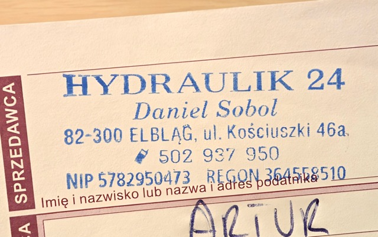
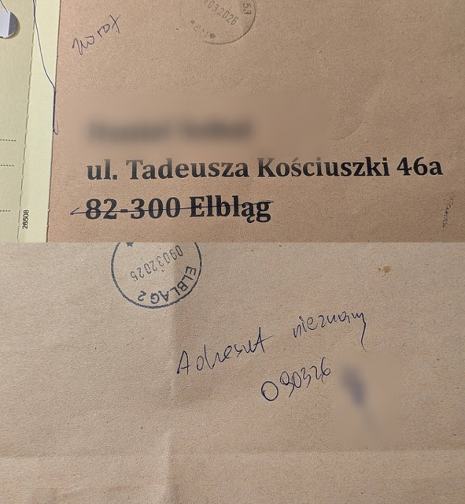
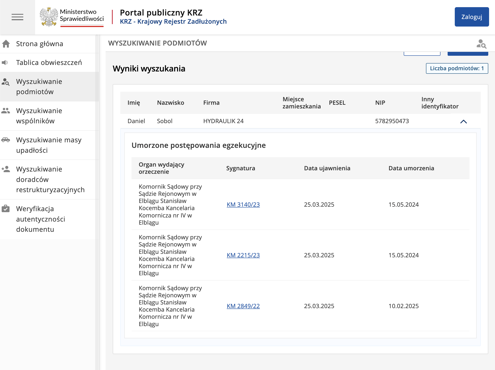

Ostatnia aktualizacja: 21 marca 2026 r.

Stwierdzono brak możliwości skutecznego doręczania korespondencji na oficjalny adres siedziby wskazany w CEIDG. Poniżej dowód zwrotu przesyłki polecanej z adnotacją operatora pocztowego.

Opis: Przesyłka zwrócona z adnotacją wskazującą na brak możliwości doręczenia pod adresem rejestrowym.
W publicznym systemie Ministerstwa Sprawiedliwości odnotowano liczne umorzone postępowania egzekucyjne z powodu bezskuteczności egzekucji.
| Podmiot / Osoba | Kwota niewyegzekwowana | Status |
|---|---|---|
| HYDRAULIK 24 | 30 117,63 PLN | Umorzone (bezskuteczność) |
| HYDRAULIK 24 | 16 556,24 PLN | Umorzone (bezskuteczność) |
| HYDRAULIK 24 | 937,53 PLN | Umorzone (bezskuteczność) |
| DANIEL SOBOL (prywatnie) | 52 931,91 PLN | Umorzone (bezskuteczność) |
| ŁĄCZNA SUMA: | 100 543,31 PLN | - |

Zadłużenie można sprawdzić bezpośrednio w Krajowym Rejestrze Zadłużonych wpisując numer NIP podmiotu.